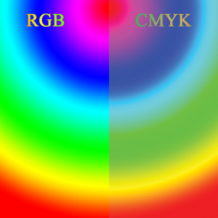

L'obiettivo di un sistema di gestione del colore è di ridurre le differenze tra i colori visualizzati su schermo e quelli della stampa finale, e inoltre di individuare i colori “fuori gamma,” cioè non compresi nella gamma di colori (o “gamut”) della stampante che si intende usare. Per usare la gestione del colore sono necessari profili ragionevolmente accurati sia della stampante sia del monitor. Il concetto di gestione del colore, le opzioni e le descrizioni possono causare notevole confusione nell'utente inesperto. Se non si conosce la terminologia, è molto facile scegliere impostazioni errate, e di conseguenza spesso si peggiora l'aspetto delle immagini su video, su carta, o su entrambi. Allora il neofita dice “ne ho abbastanza!”, e disabilita la gestione del colore.
Ebbene: non fatelo. Vi basterà comprendere alcuni concetti di base e conoscere la destinazione finale di stampa, e sarete in grado di prevedere e controllare meglio l'aspetto che il documento avrà quando sarà stampato. Questo è utile specialmente quando dovete inviare dei file in tipografia per la stampa in quadricromia.
Questi sono i passi per fare in modo che la gestione del colore funzioni in modo affidabile (ciò che vedete a video è ciò che sarà stampato):
Il sistema di gestione del colore di Scribus è pensato per permettere prove colore a monitor (“soft proofs”) con la gestione del colore attiva. Inoltre Scribus può avvisare della presenza di colori “fuori gamma”, che potrebbero essere riprodotti in modo non accurato da una stampante o da una macchina tipografica: questo può accadere perché la maggior parte delle stampanti hanno una gamma meno ampia di colori stampabili (CMYK), rispetto alla maggior parte dei monitor (RGB). Scribus non incorpora profili nelle immagini, né altera quelli incorporati in esse (alcuni formati immagine, come EPS, JPEG, PNG o TIFF, permettono di incorporare profili ICM o ICC.)
|  |
Il modello RGB (a sinistra) ha una gamma di colori molto più ampia del modello CMYK (a destra). |
Che cosa sono i profili di colore, e i profili di periferica?
I profili ICC o ICM sono uno speciale tipo di file che descrive le caratteristiche di colore di una periferica come uno scanner, un monitor o una stampante. Possono esistere profili per qualunque apparecchio in grado di creare, visualizzare o manipolare immagini digitali, da cui il termine profilo di periferica.
Vi sono anche profili di colore detti indipendenti dalla periferica o di spazio di lavoro. Questi file speciali possono essere considerati “traduttori” che convertono i dati di colore da un tipo di profilo colore ad un altro.
Un file ICC o ICM è un insieme di tabelle che contengono i valori matematici per mezzo dei quali una periferica misura e descrive il colore. Fortunatamente, questi profili seguono uno standard aperto internazionale e funzionano allo stesso modo su Mac OS X, OS/2, eCS, Windows, Linux o UNIX.
Perché la gestione del colore funzioni correttamente, i seguenti componenti devono essere installati, funzionanti e utilizzabili:
/usr/share/color/icc (profili di sistema) e /home/username/.color/icc (profili utente)./Library/ColorSync/Profiles.C:\WINNT\system32\spool\drivers\color (Windows 2000) e C:\Windows\system32\spool\drivers\color (Windows XP, Vista, 7).system32 perché li cercano in C:\Windows\SysWOW64, che è una cartella contenente i file necessari per la compatibilità dei programmi a 32 bit (questo non è un refuso: la cartella con un “32” nel nome è per i file a 64 bit, e quella con “64” nel nome è per file a 32 bit!). Se usate un programma a 32 bit su una versione di Windows a 64 bit, e i profili colore non sono disponibili, dovreste copiarli anche in C:\Windows\SysWOW64\spool\drivers\color.X:\scribus-directory\lib\scribus\profiles. X:\ICC. In Scribus potete aggiungere questo percorso nella scheda “Generale” delle preferenze./boot/apps/Scribus/share/scribus/profiles.